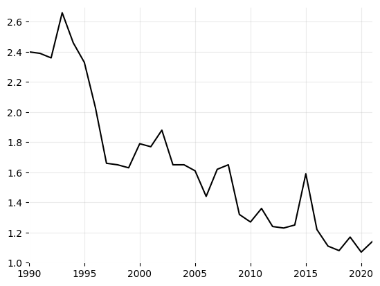
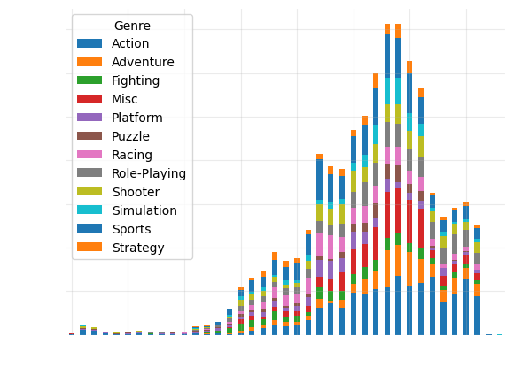
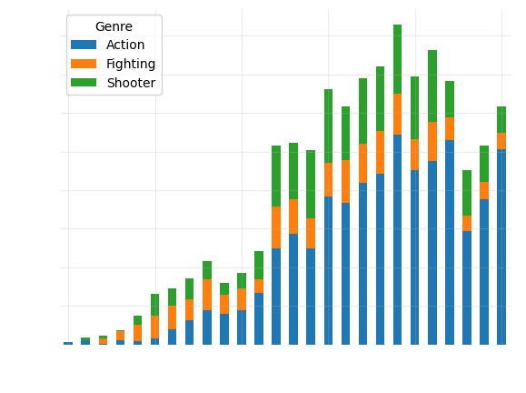
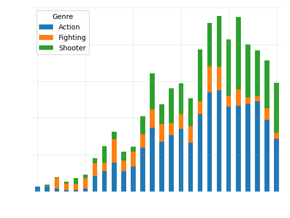

import pandas as pd
import numpy as np
import matplotlib.pyplot as plt
from scipy.stats import lognorm
df_game = pd.read_csv("video_game.csv")
df_murder = pd.read_csv("france_murder.csv")Start
Import libs and datasets
## Analyse murder rate
print(df_murder.head()) Unnamed: 0 Murder/Homicide Rate
0 1990 2.40
1 1991 2.39
2 1992 2.36
3 1993 2.66
4 1994 2.46m_year = df_murder["Unnamed: 0"]
m_murder = df_murder["Murder/Homicide Rate"]import matplotlib.pyplot as plt
fig, ax = plt.subplots()
ax.plot(m_year, m_murder, color="black")
ax.fill_between(m_year, m_murder, 1, alpha=0.3, color="white")
# axes blancs
ax.tick_params(colors="black")
ax.xaxis.label.set_color("black")
ax.yaxis.label.set_color("black")
# bordures blanches
for spine in ax.spines.values():
spine.set_color("white")
ax.set_xlim(1990, 2021)
ax.set_ylim(1, 2.7)
ax.grid(alpha=0.25)
# fond transparent
fig.patch.set_alpha(0)
#plt.savefig("../image/murder_rate.png", dpi=300, transparent=True)
plt.show()
## Analyse Video games
print(df_game.head()) Name Platform Year_of_Release Genre Publisher \
0 Wii Sports Wii 2006.0 Sports Nintendo
1 Super Mario Bros. NES 1985.0 Platform Nintendo
2 Mario Kart Wii Wii 2008.0 Racing Nintendo
3 Wii Sports Resort Wii 2009.0 Sports Nintendo
4 Pokemon Red/Pokemon Blue GB 1996.0 Role-Playing Nintendo
NA_Sales EU_Sales JP_Sales Other_Sales Global_Sales Critic_Score \
0 41.36 28.96 3.77 8.45 82.53 76.0
1 29.08 3.58 6.81 0.77 40.24 NaN
2 15.68 12.76 3.79 3.29 35.52 82.0
3 15.61 10.93 3.28 2.95 32.77 80.0
4 11.27 8.89 10.22 1.00 31.37 NaN
Critic_Count User_Score User_Count Developer Rating
0 51.0 8 322.0 Nintendo E
1 NaN NaN NaN NaN NaN
2 73.0 8.3 709.0 Nintendo E
3 73.0 8 192.0 Nintendo E
4 NaN NaN NaN NaN NaN df_game = df_game.dropna(subset=["Year_of_Release"])
v_year = df_game["Year_of_Release"].astype(int)
v_genre = df_game["Genre"]
v_freq = pd.crosstab(v_year, v_genre)fig, ax = plt.subplots()
v_freq.plot.bar(stacked=True, ax=ax)
ax.set_xlabel("Year", color="white")
ax.set_ylabel("Number of games", color="white")
plt.xticks(rotation=0)
# espacer les années
ax.set_xticks(range(0, len(v_freq.index), 5))
ax.set_xticklabels(v_freq.index[::5])
ax.tick_params(colors="white")
for spine in ax.spines.values():
spine.set_color("white")
ax.grid(alpha=0.25)
fig.patch.set_alpha(0)
#plt.savefig("../image/game_by_gender.png", dpi=300, transparent=True)
plt.show()
genres_wanted = ["Action", "Fighting", "Shooter"]
df_filtered = df_game[df_game["Genre"].isin(genres_wanted)].copy()
df_filtered["Year_of_Release"] = df_filtered["Year_of_Release"].astype("Int64")
freq = pd.crosstab(df_filtered["Year_of_Release"], df_filtered["Genre"])
freq = freq.loc[1990:2015]import matplotlib.pyplot as plt
fig, ax = plt.subplots()
freq.plot.bar(stacked=True, ax=ax)
ax.set_xlabel("Year", color="white")
ax.set_ylabel("Number of games", color="white")
# espacer les années
ax.set_xticks(range(0, len(freq.index), 5))
ax.set_xticklabels(freq.index[::5], rotation=0)
# couleur des ticks
ax.tick_params(colors="white")
# bordures
for spine in ax.spines.values():
spine.set_color("white")
ax.grid(alpha=0.25)
# fond transparent
fig.patch.set_alpha(0)
ax.set_facecolor("none")
plt.savefig("../image/game_genre_count.png", dpi=300, transparent=True)
plt.show()
genres_wanted = ["Action", "Fighting", "Shooter"]
df_filtered = df_game[df_game["Genre"].isin(genres_wanted)]
year = df_filtered["Year_of_Release"].astype(int)
genre = df_filtered["Genre"]
freq = pd.crosstab(year, genre)
sales_by_genre = df_filtered.groupby([year, genre])["Global_Sales"].sum().unstack(fill_value=0)
sales_by_genre = sales_by_genre.loc[1990:2015]import matplotlib.pyplot as plt
fig, ax = plt.subplots()
sales_by_genre.plot.bar(stacked=True, ax=ax)
ax.set_xlabel("Year", color="white")
ax.set_ylabel("Global sales", color="white")
# espacer les années
ax.set_xticks(range(0, len(sales_by_genre.index), 5))
ax.set_xticklabels(sales_by_genre.index[::5], rotation=0)
# ticks blancs
ax.tick_params(colors="white")
# bordures blanches
for spine in ax.spines.values():
spine.set_color("white")
ax.grid(alpha=0.25)
# fond transparent
fig.patch.set_alpha(0)
plt.savefig("../image/game_gender_pondered.png", dpi=300, transparent=True)
plt.show()
import matplotlib.pyplot as plt
import numpy as np
# données
y = sales_by_genre[genres_wanted].sum(axis=1)
x = sales_by_genre.index.astype(int)
# fit polynomial
coef = np.polyfit(x, y, deg=4)
poly = np.poly1d(coef)
y_fit = poly(x)
fig, ax = plt.subplots()
ax.plot(x, y, "o", label="Data", color="white")
ax.plot(x, y_fit, label="Polynomial fit (deg 4)", color="blue")
ax.set_xlabel("Year", color="white")
ax.set_ylabel("Global Sales", color="white")
# espacer les années
ax.set_xticks(x[::5])
ax.set_xticklabels(x[::5], rotation=0)
# ticks blancs
ax.tick_params(colors="white")
# bordures blanches
for spine in ax.spines.values():
spine.set_color("white")
ax.grid(alpha=0.25)
ax.legend()
# fond transparent
fig.patch.set_alpha(0)
plt.savefig("../image/game_fitting.png", dpi=300, transparent=True)
plt.show()y_fit = pd.Series(poly(x), index=x)
murder_series = df_murder.set_index("Unnamed: 0")["Murder/Homicide Rate"]
murder_series.index = murder_series.index.astype(int)
common_years = y_fit.index.intersection(murder_series.index)
sales_aligned = y_fit.loc[common_years]
murder_aligned = murder_series.loc[common_years]
corr = sales_aligned.corr(murder_aligned)
print(corr)import matplotlib.pyplot as plt
fig, ax1 = plt.subplots()
# ventes (fit)
ax1.plot(common_years, sales_aligned, color="blue", linewidth=2, label="Game sales fit")
ax1.set_xlabel("Year", color="white")
ax1.set_ylabel("Global Sales", color="white")
# axe homicide
ax2 = ax1.twinx()
ax2.plot(common_years, murder_aligned, color="white", linestyle="--", linewidth=2, label="Murder rate")
ax2.fill_between(common_years, murder_aligned, 1, alpha=0.3, color="white")
ax2.set_ylabel("Murder/Homicide Rate", color="white")
# ticks blancs
ax1.tick_params(colors="white")
ax2.tick_params(colors="white")
# bordures blanches
for spine in ax1.spines.values():
spine.set_color("white")
for spine in ax2.spines.values():
spine.set_color("white")
# espacer les années
ax1.set_xticks(common_years[::5])
# grille
ax1.grid(alpha=0.25)
# fond transparent
fig.patch.set_alpha(0)
plt.savefig("../image/game_vs_murder.png", dpi=300, transparent=True)
plt.show()